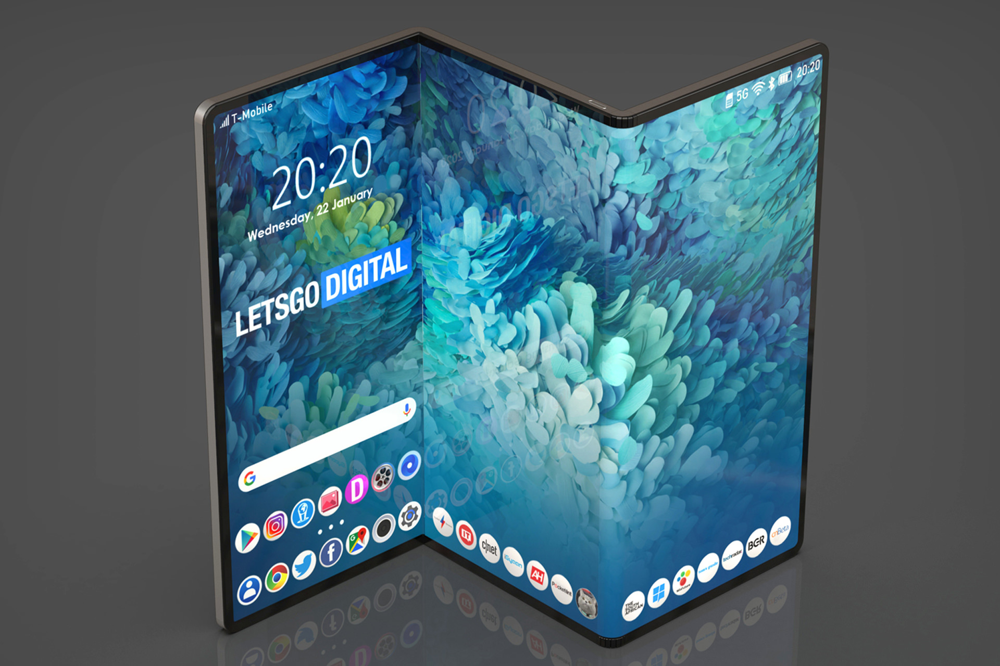

-
تکنولوژی

اولین تبلت تاشدنی سامسونگ تا شش ماه دیگر به بازار میآید
گزارشهای تازه نشان میدهند که سامسونگ بهزودی اولین تبلت سری گلکسی را با قابلیت تاشدن صفحهنمایش رونمایی میکند.
تنها چند روز تا رونمایی نسل بعدی گوشیهای هوشمند تاشدنی سامسونگ در رویداد Unpacked باقی مانده است؛ اما قدم بعدی سامسونگ پیش از رونمایی گلکسی زد فلیپ 4 و گلکسی زد فولد 4 چیست؟ آیا محصول تاشدنی بعدی یک سال دیگر رونمایی میشود یا امسال محصول سومی نیز در راه است؟ بهنظر میرسد سامسونگ قصد دارد همزمان با سری گلکسی تب اس 9، اولین تبلت تاشدنی تمامعیار خود را نیز معرفی کند.
جدیدترین شایعات منتشرشده بر نسل بعد گوشی زد فلیپ و زد فولد و ساعتهای گلکسی واچ متمرکز بودهاند و اطلاعات زیادی از گلکسی تب اس 9 موجود نیست. بااینحال، با درنظرگرفتن رویدادهای یکسالهی رونمایی سامسونگ، میتوان انتظار داشت که سری تب اس 9 بههمراه اولین تبلت تاشدنی گلکسی حدود دی یا بهمن امسال معرفی شوند. بر همگان واضح است که سامسونگ حدود یک دهه روی فناوری نمایشگرهای تاشدنی کار کرده است. این فناوری با اولین دستگاه گلسکی فولد بهحقیقت پیوست و هرساله بهتر میشود.

در همین حال، گروه Samsung Display با استفاده از فناوری نمایشگرهای تاشدنیاش از فرصتهای زیادی برای بهنمایشگذاشتن طراحیهای جدید و بینظیر بهرهمند بوده است. این شرکت تابهحال نمونههای اولیهی نمایشگرهای تاشدنی دوگانه و کشویی و لولهشدنی را تولید و تعداد زیادی کانسپت نیز ثبت کرده است. حتی سامسونگ یک بار ایدهی تولید لپتاپ گلکسیبوک ۱۷ اینچی تاشدنی را مطرح کرد.
با درنظرگرفتن این نکات، هنوز برای حدسزدن طراحی بهکارگرفتهشده در اولین تبلت تاشدنی سامسونگ خیلی زود است؛ ولی اصل اولیه ثابت است: فراهمکردن نمایشگری بزرگ با طراحی جمعوجور و قابلیت بازوبستهشدن. گفته میشود، سامسونگ با بهرهگیری از سری گلکسی زد تب و فلکس اس قصد دارد موقعیت خود را بهعنوان اولین تولیدکنندهی صفحههای تاشدنی تثبیت کند و درعینحال، محبوبیت گلکسی زد فولد 4 و گلکسی زد فلیپ 4 را افزایش دهد. ناگفته نماند این دو گوشی ۱۹ مرداد در رویداد آنپکد رونمایی میشوند.